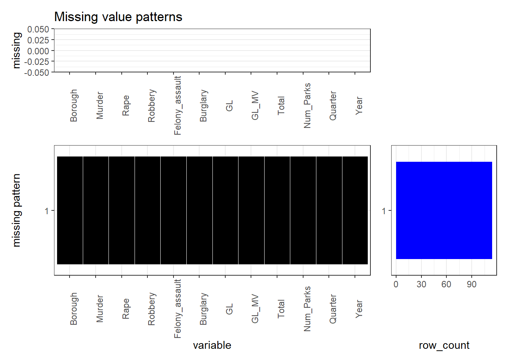
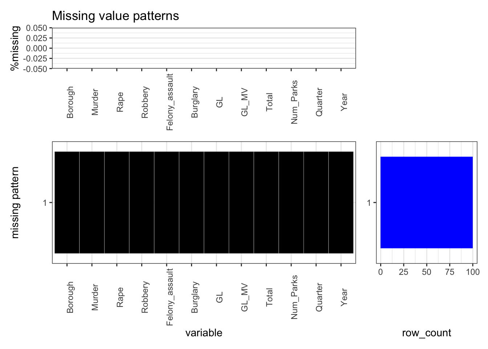

Chapter 4 Missing values
Here is the function for plotting missing values
plot_missing <- function(data, percent = FALSE) {
if (percent == FALSE) {
cols <- colSums(is.na(data)) %>% sort(decreasing = TRUE)
missing_label = 'missing'
} else {
cols <- colSums(is.na(data))
if (sum(cols) > 0) {
cols <- cols/sum(cols)*100
}
cols <- cols %>% sort(decreasing = TRUE)
missing_label = '%missing'
}
pu <- ggplot() +
geom_bar(aes(x = names(cols), y = cols), fill = 'cornflowerblue', stat = 'identity') +
ggtitle('Missing value patterns') +
scale_x_discrete(limits = names(cols)) +
ylab(missing_label) +
theme_bw() +
theme(axis.title.x = element_blank(), panel.grid.major.x = element_blank(), axis.text.x = element_text(angle = 90))
missing_patterns <- data.frame(is.na(data[, names(cols)])) %>%
group_by_all() %>%
count(name = 'count', sort = TRUE) %>%
ungroup()
row_count <- missing_patterns$count
missing_patterns <- missing_patterns[,names(missing_patterns) != 'count'] * 1
complete_rows <- apply(missing_patterns, 1, function(row) all(row == 0 ))
missing_patterns[complete_rows,] <- 2
df <- missing_patterns %>%
mutate(id = row_number()) %>%
gather(key, value, -id)
pm <- ggplot(df, aes(key, fct_rev(as.factor(id)), fill = as.factor(value))) +
geom_tile(color = 'white') +
scale_fill_manual(values = c('0' = 'gray', '1' = 'blueviolet', '2' = 'black')) +
scale_x_discrete(limits = names(cols)) +
ylab('missing pattern') +
xlab('variable') +
theme_bw() +
theme(legend.position = 'none', axis.text.x = element_text(angle = 90))
if (percent == TRUE) {
row_count <- row_count/sum(row_count) * 100
}
r <- data.frame('row count' = row_count, 'r_id' = 1:length(row_count), 'complete' = complete_rows*1)
pr <- ggplot(r, aes(fct_rev(as.factor(r_id)), row_count, fill = as.factor(complete))) +
geom_bar(stat = 'identity') +
scale_fill_manual(values = c('0' = 'cornflowerblue', '1' = 'blue')) +
coord_flip() +
theme_bw() +
theme(axis.title.y = element_blank(), panel.grid.major.y = element_blank(), legend.position = 'none')
layout <- '
AAA#
BBBC
BBBC
BBBC
'
pu + pm + pr + plot_layout(design = layout)
}Both the raw data files and the transformed data files do not contain missing values. The first reason is that these data are safety related, so they are well documented in detail. The other reason is that the features/columns we are interested in are quite common, such as precinct, borough,crime type, and crime subtype. There are some columns in raw data that contain missing values, but we don’t care about those columns. Moreover, the size of raw data is too large to present here. Therefore, we decided to demonstrate one of the data samples we used for analysis: park crime data.
The first plot shows “count of missing values” while the second plot shows “percentage of missing values”.
plot_missing(df, percent = FALSE)
plot_missing(df, percent = TRUE)